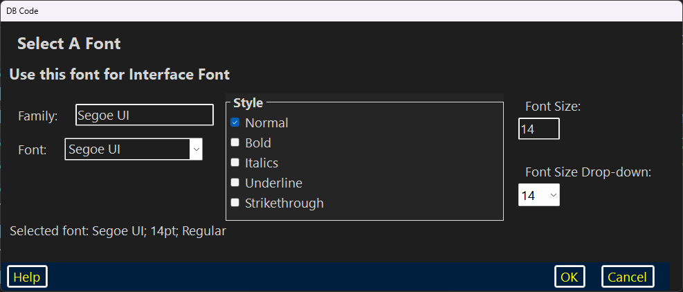

Font Picker’s bottom panel

This Font Picker dialog was specifically designed to be Dragon–friendly.
| The Font Picker | ||
| The Font Family Section | The Style GroupBox | The Font Size Section |
| The Bottom Panel | ||
| Other Help Pages | ||

The Font Picker
The “Font Picker” has a title: “Select A Font” below which is a label which describes how the font is to be used.
The Font Family Section
There is a “Family:” prefix button with which the user may activate the associated TextBox in which the user may enter any valid Font name for a font which is currently installed on the system.
Below that there is a “Font:” prefix button and its associated ComboBox. This ComboBox contains all of the Fonts which are currently installed on the system. Each ComboBox item is presented in its own font as an example.
The Style GroupBox
The “Style” GroupBox contains five CheckBoxes: “Normal”; “Bold”; “Italics”; “Underline” and “Strikethrough”. If “Normal” is checked, all the other CheckBoxes will be unchecked; If any of the other CheckBoxes are checked, “Normal” will be unchecked. Any or all of the non-Normal CheckBoxes may be checked simultaneously to combine them.
The Font Size Section
There is a “Font Size:” prefix button with which the user may activate the associated TextBox in which the user may enter a Font size.
Below that there is a “Font Size Drop–down:” prefix button and its associated ComboBox. This ComboBox comes pre–populated with an assortment of commonly used sizes.
The Bottom Panel
The bottom panel has the three traditional buttons: “Help”; “OK” and “Cancel”.
“Help” brings up context–sensitive help in the user’s preferred browser (this page).
“OK” closes the dialog and immediately applies the font according to the usage.
“Cancel” closes the dialog without applying the font.